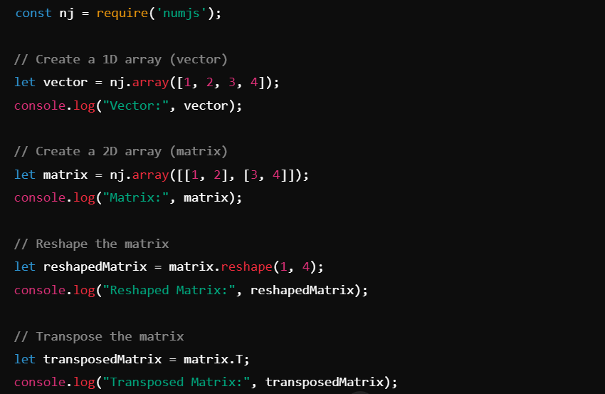

let arr = nj.array([1, 2, 3, 4, 5]);
arr = arr.add(2); // Adds 2 to each element
console.log(arr); // Output: [3, 4, 5, 6, 7]
Introduction
NumJS is a powerful JavaScript library for numerical computing, bringing the capabilities of array and matrix operations, linear algebra, and statistical functions to JavaScript. Whether you're building web applications or server-side solutions, NumJS simplifies complex calculations with an intuitive API. Perform tasks like matrix multiplication, statistical analysis, and element-wise operations—all within JavaScript. Optimized for both browser and Node.js environments, NumJS offers a seamless and efficient solution for numerical computing without the need for external libraries or languages.
Installation and Setup
To get started with NumJS, follow the steps below to install and configure it in your project:
- Open your terminal or command prompt.
- If you're using npm, run the following command to install NumJS:
npm install numjs - If you're using a browser, you can include the library directly in your HTML:
<script src="https://cdn.jsdelivr.net/npm/numjs@0.0.1/dist/numjs.min.js"></script> - Once installed, you can import the library in your JavaScript file:
import nj from 'numjs';
Key Features
- Array Operations: Perform vector and matrix operations with ease. 
- Linear Algebra: Includes functions for matrix multiplication, inverses, eigenvalues, and more.
- Statistical Functions: Compute mean, variance, standard deviation, etc.
- Element-wise Operations: Perform mathematical operations on individual elements of arrays.
- Integration with JavaScript: Easily integrates with other JavaScript tools and libraries.
Code Examples
Here are some examples to demonstrate how to use NumJS in your project:
let mat1 = nj.array([[1, 2], [3, 4]]);
let mat2 = nj.array([[5, 6], [7, 8]]);
let result = mat1.dot(mat2); // Matrix multiplication
console.log(result); // Output: [[19, 22], [43, 50]]
let data = nj.array([5, 10, 15, 20, 25]);
let mean = data.mean();
let variance = data.var();
console.log(`Mean: ${mean}, Variance: ${variance}`);
let originalArray = nj.array([1, 2, 3, 4, 5, 6, 7, 8, 9, 10, 11, 12]);
let reshapedArray = originalArray.reshape(3, 4); // Reshape to 3 rows and 4 columns
console.log(reshapedArray.toString());
let randomArray = nj.random([3, 3], 'uniform'); // 3x3 array with random values between 0 and 1
console.log(randomArray.toString());
let A = nj.array([[3, 2], [1, 2]]);
let b = nj.array([8, 6]);
let solution = nj.linalg.solve(A, b);
console.log(solution.toString());
let angles = nj.array([0, Math.PI / 2, Math.PI, 3 * Math.PI / 2]);
let sineValues = angles.sin();
console.log(sineValues.toString());
Screenshots
Below are screenshots that illustrate the key functionalities:

Use Cases
NumJS can be applied in various domains where numerical computation is needed:
Data Science:
NumJS is highly useful for data analysis tasks, enabling efficient handling of large datasets, performing statistical analysis, data cleaning, and extracting valuable insights for decision-making.Machine Learning:
In machine learning, NumJS facilitates the mathematical operations required for model building, training algorithms, optimization, and evaluation, especially in areas like linear regression and neural network calculations.Web Applications:
For web applications, NumJS allows for the execution of client-side complex calculations in JavaScript, improving performance and interactivity in real-time data processing and visualization without server dependency.Scientific Computing:
NumJS supports scientific research by offering powerful tools for numerical simulations, solving differential equations, linear algebra, and matrix operations, essential for advancing scientific discoveries and computational modeling.
Conclusion
NumJS is a robust and easy-to-use JavaScript library for numerical computing. Its versatility in handling arrays, matrices, and mathematical functions makes it an excellent tool for developers working on data-heavy applications. Whether you are building data analytics tools, machine learning models, or scientific simulations, NumJS provides the essential capabilities to carry out numerical computations effectively in JavaScript.
References and Further Reading
For more in-depth tutorials and documentation on NumJS, check out the following resources: